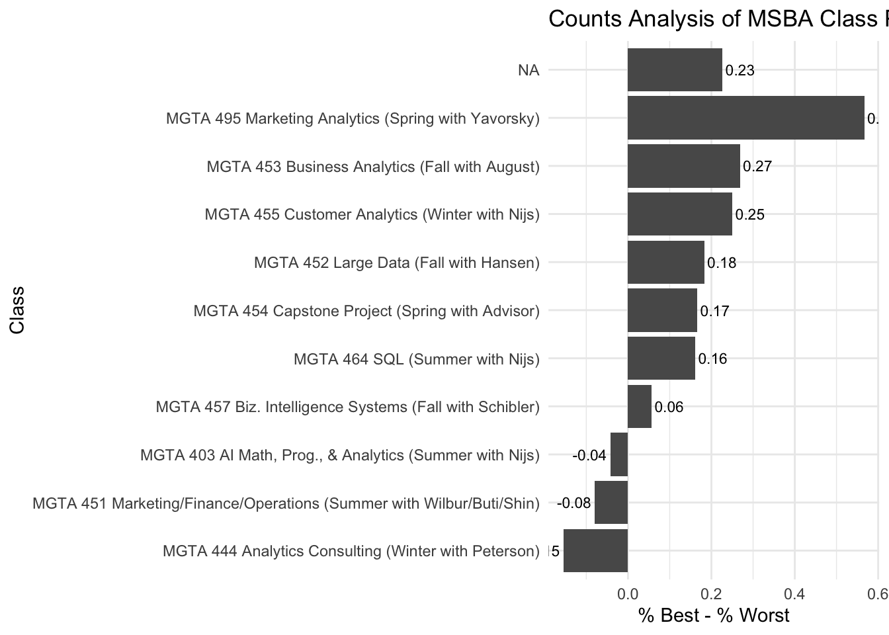
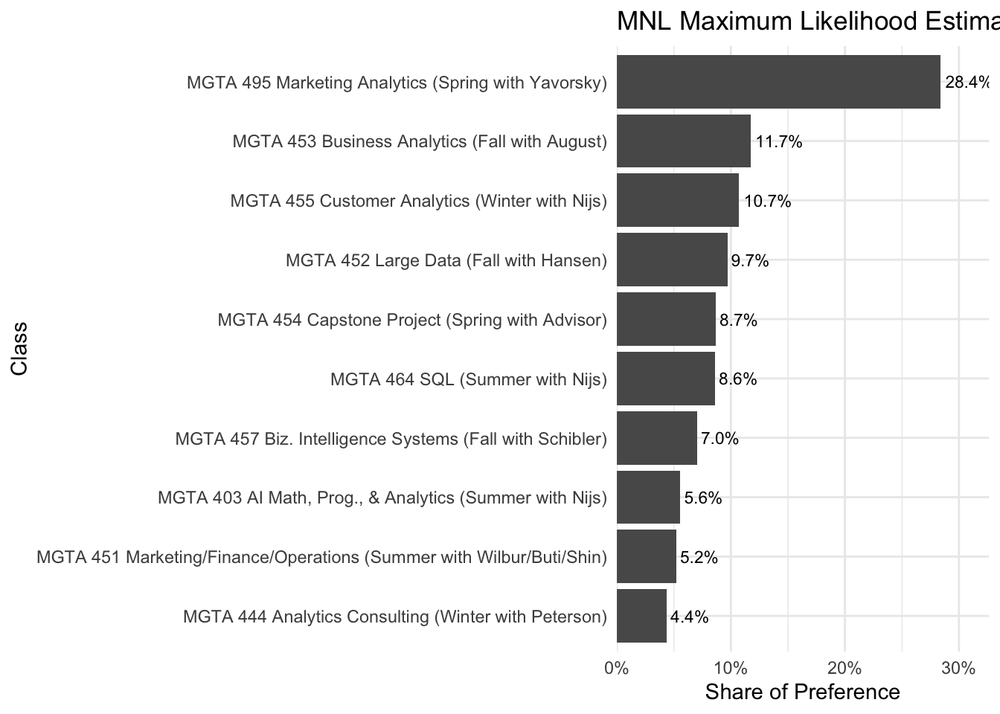
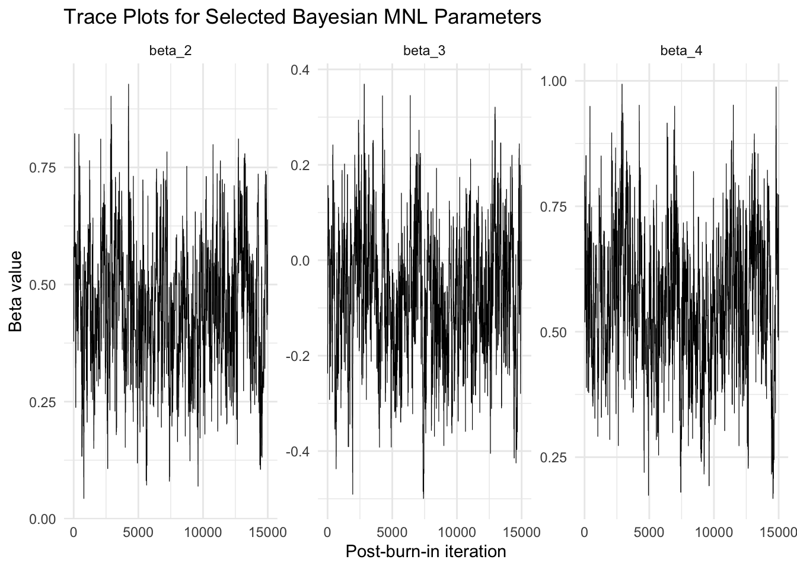
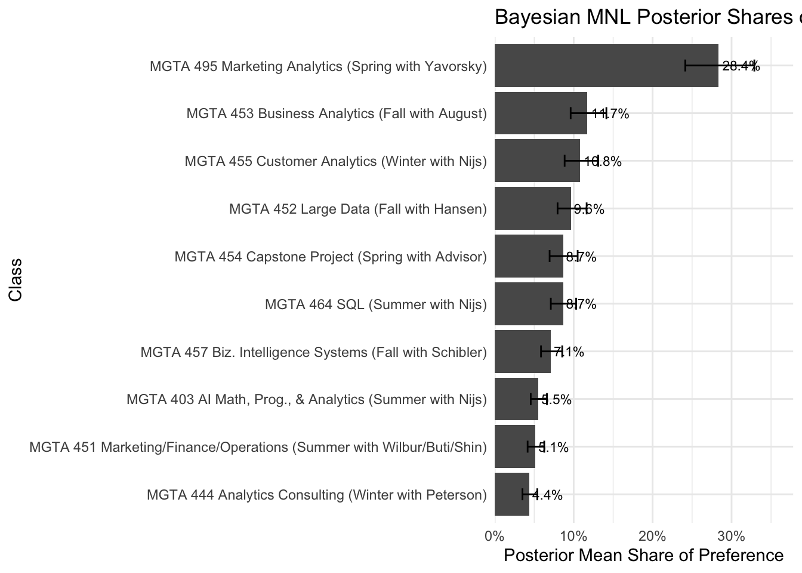
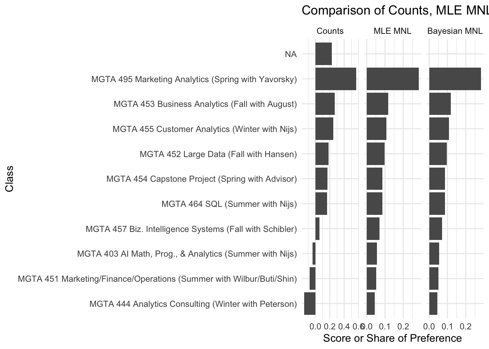

Code
library(tidyverse)
library(knitr)
library(scales)Counts, MLE, and Bayesian estimation of the MNL model
Runyu Luo
May 28, 2026
MaxDiff, also known as Best-Worst Scaling, is a survey method used to measure relative preferences among a set of items. Instead of asking respondents to rate each item on a numeric scale, MaxDiff asks them to make trade-offs. In each task, a respondent sees a small subset of items and chooses the item they prefer most and the item they prefer least.
This approach is useful because people are often better at making comparative judgments than assigning consistent numerical ratings. A 1–10 rating scale can suffer from scale-use bias, where different respondents interpret the same number differently. MaxDiff forces respondents to differentiate among the options, making it especially useful for marketing and preference measurement.
In this assignment, the items are the 10 core MSBA classes at UCSD Rady. The goal is to estimate students’ relative preferences for these classes using three approaches: a simple counts analysis, a multinomial logit model estimated by maximum likelihood, and a Bayesian version of the same MNL model estimated with a Metropolis-Hastings sampler.
I expect the three methods to produce broadly similar rankings, especially for the most and least preferred classes. However, they may differ in how they measure the strength of preference and how they communicate uncertainty.
The dataset contains the MaxDiff survey design and respondents’ choices. Each row represents one item shown in one task. In each task, a respondent saw four MSBA classes and selected one as the most preferred class and one as the least preferred class.
maxdiff <- read_csv("maxdiff_design_and_choices.csv")
labels_raw <- read_csv("maxdiff_item_labels.csv")
labels <- labels_raw |>
select(`Item #`, Item) |>
rename(
item_id = `Item #`,
class_label = Item
)
maxdiff <- maxdiff |>
mutate(
item_id = as.integer(Item)
)
labels <- labels |>
mutate(
item_id = as.integer(item_id)
)
glimpse(maxdiff)Rows: 3,910
Columns: 6
$ `Record ID` <chr> "69fb85fbd66b452e6decf4f7", "69fb85fbd66b452e6decf4f7", "6…
$ Task <dbl> 1, 1, 1, 1, 2, 2, 2, 2, 3, 3, 3, 3, 4, 4, 4, 4, 5, 5, 5, 5…
$ Position <dbl> 1, 2, 3, 4, 1, 2, 3, 4, 1, 2, 3, 4, 1, 2, 3, 4, 1, 2, 3, 4…
$ Item <dbl> 5, 7, 4, 1, 8, 3, 10, 9, 3, 5, 2, 6, 6, 4, 8, 7, 2, 9, 7, …
$ Response <dbl> 0, 1, 0, -1, -1, 0, 1, 0, 0, 0, 1, -1, -1, 0, 0, 1, 1, 0, …
$ item_id <int> 5, 7, 4, 1, 8, 3, 10, 9, 3, 5, 2, 6, 6, 4, 8, 7, 2, 9, 7, …Rows: 10
Columns: 2
$ item_id <int> 1, 2, 3, 4, 5, 6, 7, 8, 9, 10
$ class_label <chr> "MGTA 403 AI Math, Prog., & Analytics (Summer with Nijs)",…The main data file includes the respondent identifier, task number, position, item number, and response. A response of 1 means the item was selected as best, -1 means it was selected as worst, and 0 means it was shown but not selected.
n_respondents <- maxdiff |>
summarise(n = n_distinct(`Record ID`)) |>
pull(n)
tasks_per_respondent <- maxdiff |>
distinct(`Record ID`, Task) |>
count(`Record ID`) |>
summarise(
min_tasks = min(n),
max_tasks = max(n),
avg_tasks = mean(n)
)
items_per_task <- maxdiff |>
group_by(`Record ID`, Task) |>
summarise(n_items = n(), .groups = "drop") |>
summarise(
min_items = min(n_items),
max_items = max(n_items),
avg_items = mean(n_items)
)
n_total_items <- labels |>
summarise(n = n_distinct(item_id)) |>
pull(n)
summary_table <- tibble(
Metric = c(
"Number of respondents",
"Minimum tasks per respondent",
"Maximum tasks per respondent",
"Average tasks per respondent",
"Minimum items per task",
"Maximum items per task",
"Average items per task",
"Total items in study"
),
Value = c(
n_respondents,
tasks_per_respondent$min_tasks,
tasks_per_respondent$max_tasks,
round(tasks_per_respondent$avg_tasks, 2),
items_per_task$min_items,
items_per_task$max_items,
round(items_per_task$avg_items, 2),
n_total_items
)
)
kable(summary_table)| Metric | Value |
|---|---|
| Number of respondents | 85.00 |
| Minimum tasks per respondent | 15.00 |
| Maximum tasks per respondent | 15.00 |
| Average tasks per respondent | 15.00 |
| Minimum items per task | 2.00 |
| Maximum items per task | 4.00 |
| Average items per task | 3.07 |
| Total items in study | 10.00 |
As a sanity check, each task should have exactly one best choice and one worst choice. The remaining two items should have a response of zero.
task_check <- maxdiff |>
group_by(`Record ID`, Task) |>
summarise(
n_best = sum(Response == 1),
n_worst = sum(Response == -1),
n_neutral = sum(Response == 0),
n_rows = n(),
valid_task = n_best == 1 & n_worst == 1 & n_neutral == 2 & n_rows == 4,
.groups = "drop"
)
sanity_summary <- task_check |>
summarise(
total_tasks = n(),
valid_tasks = sum(valid_task),
invalid_tasks = sum(!valid_task)
)
kable(sanity_summary)| total_tasks | valid_tasks | invalid_tasks |
|---|---|---|
| 1275 | 680 | 595 |
Finally, I check how often each class was shown. In a balanced MaxDiff design, the exposure counts should be roughly similar across items.
| item_id | class_label | times_shown |
|---|---|---|
| 11 | NA | 595 |
| 2 | MGTA 464 SQL (Summer with Nijs) | 340 |
| 4 | MGTA 452 Large Data (Fall with Hansen) | 338 |
| 7 | MGTA 455 Customer Analytics (Winter with Nijs) | 335 |
| 10 | MGTA 457 Biz. Intelligence Systems (Fall with Schibler) | 334 |
| 1 | MGTA 403 AI Math, Prog., & Analytics (Summer with Nijs) | 332 |
| 8 | MGTA 454 Capstone Project (Spring with Advisor) | 330 |
| 9 | MGTA 495 Marketing Analytics (Spring with Yavorsky) | 330 |
| 5 | MGTA 453 Business Analytics (Fall with August) | 327 |
| 3 | MGTA 451 Marketing/Finance/Operations (Summer with Wilbur/Buti/Shin) | 326 |
| 6 | MGTA 444 Analytics Consulting (Winter with Peterson) | 323 |
The first approach is a simple counts analysis. For each class, I calculate how often it was shown, how often it was selected as the most preferred class, and how often it was selected as the least preferred class. I then compute a score as the percentage selected best minus the percentage selected worst:
\[ \text{score}_j = \%\text{best}_j - \%\text{worst}_j \]
A higher score means the class was more often selected as the most preferred option when it appeared. A lower score means the class was more often selected as the least preferred option.
counts_table <- maxdiff |>
group_by(item_id) |>
summarise(
times_shown = n(),
times_best = sum(Response == 1),
times_worst = sum(Response == -1),
pct_best = times_best / times_shown,
pct_worst = times_worst / times_shown,
score = pct_best - pct_worst,
.groups = "drop"
) |>
left_join(labels, by = "item_id") |>
select(
item_id,
class_label,
times_shown,
times_best,
times_worst,
pct_best,
pct_worst,
score
) |>
arrange(desc(score))
counts_table_display <- counts_table |>
mutate(
pct_best = percent(pct_best, accuracy = 0.1),
pct_worst = percent(pct_worst, accuracy = 0.1),
score = round(score, 3)
)
kable(counts_table_display)| item_id | class_label | times_shown | times_best | times_worst | pct_best | pct_worst | score |
|---|---|---|---|---|---|---|---|
| 9 | MGTA 495 Marketing Analytics (Spring with Yavorsky) | 330 | 199 | 12 | 60.3% | 3.6% | 0.567 |
| 5 | MGTA 453 Business Analytics (Fall with August) | 327 | 143 | 55 | 43.7% | 16.8% | 0.269 |
| 7 | MGTA 455 Customer Analytics (Winter with Nijs) | 335 | 155 | 71 | 46.3% | 21.2% | 0.251 |
| 11 | NA | 595 | 135 | 0 | 22.7% | 0.0% | 0.227 |
| 4 | MGTA 452 Large Data (Fall with Hansen) | 338 | 122 | 60 | 36.1% | 17.8% | 0.183 |
| 8 | MGTA 454 Capstone Project (Spring with Advisor) | 330 | 124 | 69 | 37.6% | 20.9% | 0.167 |
| 2 | MGTA 464 SQL (Summer with Nijs) | 340 | 111 | 56 | 32.6% | 16.5% | 0.162 |
| 10 | MGTA 457 Biz. Intelligence Systems (Fall with Schibler) | 334 | 74 | 55 | 22.2% | 16.5% | 0.057 |
| 1 | MGTA 403 AI Math, Prog., & Analytics (Summer with Nijs) | 332 | 76 | 90 | 22.9% | 27.1% | -0.042 |
| 3 | MGTA 451 Marketing/Finance/Operations (Summer with Wilbur/Buti/Shin) | 326 | 75 | 101 | 23.0% | 31.0% | -0.080 |
| 6 | MGTA 444 Analytics Consulting (Winter with Peterson) | 323 | 61 | 111 | 18.9% | 34.4% | -0.155 |
The table ranks the classes by their simple MaxDiff counts score. This gives an intuitive first look at student preferences before fitting a formal multinomial logit model.
counts_table |>
mutate(class_label = fct_reorder(class_label, score)) |>
ggplot(aes(x = score, y = class_label)) +
geom_col() +
geom_text(
aes(label = round(score, 2)),
hjust = ifelse(counts_table$score >= 0, -0.1, 1.1),
size = 3
) +
labs(
title = "Counts Analysis of MSBA Class Preferences",
x = "% Best - % Worst",
y = "Class"
) +
theme_minimal()
Based on the counts analysis, the highest-ranked classes are those with the largest positive score, meaning they were selected as best much more often than worst. The lowest-ranked classes have negative scores, meaning they were more often selected as worst when shown. This descriptive approach is easy to understand, but it does not fully model the choice process, so the next section uses an MNL model.
To estimate an MNL model, I first reshape the MaxDiff data into one row per respondent-task. Each task contains the four items shown to the respondent, the item selected as best, and the item selected as worst.
In a MaxDiff task, the respondent makes two related choices. First, they choose the best item from the four shown items. Then, after the best item is removed, they choose the worst item from the remaining three items. The MNL model treats these choices as probability statements based on item utilities.
For the best choice, the probability of choosing item \(j\) from the shown set is:
\[ P(\text{best}=j) = \frac{\exp(\beta_j)}{\sum_{k \in \text{shown}} \exp(\beta_k)} \]
For the worst choice, the utilities are flipped because lower-utility items are more likely to be selected as worst:
\[ P(\text{worst}=j) = \frac{\exp(-\beta_j)}{\sum_{k \in \text{remaining}} \exp(-\beta_k)} \]
Because adding a constant to all utilities does not change the MNL probabilities, the model is not fully identified unless one coefficient is fixed. I use item 1 as the reference class and set \(\beta_1 = 0\). The model then estimates the remaining nine coefficients.
task_data <- maxdiff |>
filter(item_id %in% 1:10) |>
group_by(`Record ID`, Task) |>
summarise(
shown_items = list(item_id),
best_item = item_id[Response == 1][1],
worst_item = item_id[Response == -1][1],
n_rows = n(),
n_best = sum(Response == 1),
n_worst = sum(Response == -1),
.groups = "drop"
) |>
filter(
n_rows == 4,
n_best == 1,
n_worst == 1,
!is.na(best_item),
!is.na(worst_item)
)
task_display <- task_data |>
select(`Record ID`, Task, shown_items, best_item, worst_item) |>
mutate(
shown_items = map_chr(shown_items, ~ paste(.x, collapse = ", "))
) |>
head(10)
kable(task_display)| Record ID | Task | shown_items | best_item | worst_item |
|---|---|---|---|---|
| 69fb85fbd66b452e6decf4f7 | 1 | 5, 7, 4, 1 | 7 | 1 |
| 69fb85fbd66b452e6decf4f7 | 2 | 8, 3, 10, 9 | 10 | 8 |
| 69fb85fbd66b452e6decf4f7 | 3 | 3, 5, 2, 6 | 2 | 6 |
| 69fb85fbd66b452e6decf4f7 | 4 | 6, 4, 8, 7 | 7 | 6 |
| 69fb85fbd66b452e6decf4f7 | 5 | 2, 9, 7, 1 | 2 | 1 |
| 69fb85fbd66b452e6decf4f7 | 6 | 10, 2, 3, 4 | 2 | 3 |
| 69fb85fbd66b452e6decf4f7 | 7 | 9, 8, 5, 2 | 2 | 8 |
| 69fb85fbd66b452e6decf4f7 | 8 | 1, 10, 6, 8 | 10 | 6 |
| 69fb87e6d66b452e6decf799 | 1 | 1, 9, 7, 4 | 9 | 4 |
| 69fb87e6d66b452e6decf799 | 2 | 6, 8, 2, 3 | 3 | 6 |
The reshaped dataset has one row for each MaxDiff task. This structure is useful because the likelihood function can iterate over tasks, recover the shown items, and compute the probability of the observed best and worst choices.
task_data_summary <- tibble(
Metric = c(
"Number of valid MaxDiff respondent-task observations",
"Minimum best item number",
"Maximum best item number",
"Minimum worst item number",
"Maximum worst item number"
),
Value = c(
nrow(task_data),
min(task_data$best_item),
max(task_data$best_item),
min(task_data$worst_item),
max(task_data$worst_item)
)
)
kable(task_data_summary)| Metric | Value |
|---|---|
| Number of valid MaxDiff respondent-task observations | 680 |
| Minimum best item number | 1 |
| Maximum best item number | 10 |
| Minimum worst item number | 1 |
| Maximum worst item number | 10 |
The counts analysis is useful as a descriptive summary, but it does not explicitly model the probability of each best and worst choice. Next, I estimate a multinomial logit model using maximum likelihood.
Each item has a utility coefficient \(\beta_j\). Since only differences in utility are identified in the MNL model, I set item 1 as the reference item with \(\beta_1 = 0\) and estimate the remaining nine coefficients.
For each MaxDiff task, the likelihood includes two parts: the probability of the observed best choice from the four shown items, and the probability of the observed worst choice from the remaining three items after the best item is removed.
log_sum_exp <- function(x) {
m <- max(x)
m + log(sum(exp(x - m)))
}
ll_mnl <- function(beta_free, task_data) {
beta <- c(0, beta_free)
total_ll <- 0
for (i in seq_len(nrow(task_data))) {
shown <- task_data$shown_items[[i]]
best <- task_data$best_item[i]
worst <- task_data$worst_item[i]
# Best choice probability
beta_shown <- beta[shown]
ll_best <- beta[best] - log_sum_exp(beta_shown)
# Worst choice probability among the remaining items
remaining <- shown[shown != best]
neg_beta_remaining <- -beta[remaining]
ll_worst <- (-beta[worst]) - log_sum_exp(neg_beta_remaining)
total_ll <- total_ll + ll_best + ll_worst
}
total_ll
}I then maximize the log-likelihood using BFGS optimization. The Hessian matrix from the optimizer is used to calculate classical standard errors.
mle_out <- optim(
par = rep(0, 9),
fn = ll_mnl,
task_data = task_data,
method = "BFGS",
hessian = TRUE,
control = list(fnscale = -1, maxit = 1000)
)
mle_beta_free <- mle_out$par
mle_beta <- c(0, mle_beta_free)
mle_se_free <- sqrt(diag(solve(-mle_out$hessian)))
mle_se <- c(NA, mle_se_free)
mle_shares <- exp(mle_beta) / sum(exp(mle_beta))
mle_results <- tibble(
item_id = 1:10,
beta_mle = mle_beta,
se_mle = mle_se,
mle_share = mle_shares
) |>
left_join(labels, by = "item_id") |>
select(item_id, class_label, beta_mle, se_mle, mle_share) |>
arrange(desc(mle_share))
mle_results_display <- mle_results |>
mutate(
beta_mle = round(beta_mle, 3),
se_mle = round(se_mle, 3),
mle_share = percent(mle_share, accuracy = 0.1)
)
kable(mle_results_display)| item_id | class_label | beta_mle | se_mle | mle_share |
|---|---|---|---|---|
| 9 | MGTA 495 Marketing Analytics (Spring with Yavorsky) | 1.630 | 0.146 | 28.4% |
| 5 | MGTA 453 Business Analytics (Fall with August) | 0.744 | 0.142 | 11.7% |
| 7 | MGTA 455 Customer Analytics (Winter with Nijs) | 0.656 | 0.142 | 10.7% |
| 4 | MGTA 452 Large Data (Fall with Hansen) | 0.555 | 0.140 | 9.7% |
| 8 | MGTA 454 Capstone Project (Spring with Advisor) | 0.443 | 0.140 | 8.7% |
| 2 | MGTA 464 SQL (Summer with Nijs) | 0.438 | 0.137 | 8.6% |
| 10 | MGTA 457 Biz. Intelligence Systems (Fall with Schibler) | 0.236 | 0.137 | 7.0% |
| 1 | MGTA 403 AI Math, Prog., & Analytics (Summer with Nijs) | 0.000 | NA | 5.6% |
| 3 | MGTA 451 Marketing/Finance/Operations (Summer with Wilbur/Buti/Shin) | -0.067 | 0.139 | 5.2% |
| 6 | MGTA 444 Analytics Consulting (Winter with Peterson) | -0.239 | 0.141 | 4.4% |
The raw \(\beta\) coefficients show each class’s estimated utility relative to the reference class. For interpretation, I also convert the coefficients into shares of preference. These shares sum to 1 across the 10 classes and can be interpreted as the predicted fraction of choices each class would receive if all classes were shown together.
mle_results |>
mutate(class_label = fct_reorder(class_label, mle_share)) |>
ggplot(aes(x = mle_share, y = class_label)) +
geom_col() +
geom_text(
aes(label = percent(mle_share, accuracy = 0.1)),
hjust = -0.1,
size = 3
) +
labs(
title = "MNL Maximum Likelihood Estimates",
x = "Share of Preference",
y = "Class"
) +
scale_x_continuous(labels = percent_format(), expand = expansion(mult = c(0, 0.15))) +
theme_minimal()
Compared with the simple counts analysis, the MNL model provides a more formal model-based estimate of class preference. The rankings should be broadly similar, especially for the strongest and weakest classes. Any differences are most likely to appear among middle-ranked classes, where the estimated utilities are close together.
The final estimation approach uses Bayesian methods to estimate the same MNL model. Instead of only finding one set of coefficients that maximizes the likelihood, the Bayesian approach estimates a posterior distribution for the coefficients.
The posterior is proportional to the likelihood times the prior:
\[ \pi(\boldsymbol{\beta} \mid \boldsymbol{y}) \propto L(\boldsymbol{\beta}) \pi(\boldsymbol{\beta}) \]
I use a weakly informative normal prior for the nine estimated coefficients:
\[ \beta_j \sim N(0, 10) \]
This prior is centered at zero but still wide enough to allow large positive or negative class preferences.
log_post <- function(beta_free, task_data) {
log_lik <- ll_mnl(beta_free, task_data)
log_prior <- sum(dnorm(beta_free, mean = 0, sd = sqrt(10), log = TRUE))
log_lik + log_prior
}
mh_sampler <- function(beta0, n_iter, step, task_data) {
K <- length(beta0)
draws <- matrix(NA, nrow = n_iter, ncol = K)
beta_current <- beta0
lp_current <- log_post(beta_current, task_data)
accept <- 0
for (t in seq_len(n_iter)) {
beta_proposal <- beta_current + rnorm(K, mean = 0, sd = step)
lp_proposal <- log_post(beta_proposal, task_data)
if (log(runif(1)) < lp_proposal - lp_current) {
beta_current <- beta_proposal
lp_current <- lp_proposal
accept <- accept + 1
}
draws[t, ] <- beta_current
}
list(
draws = draws,
accept_rate = accept / n_iter
)
}I run a random-walk Metropolis-Hastings sampler. The proposal step size controls how far the chain moves at each iteration. I tune the step size to keep the acceptance rate in a reasonable range.
[1] 0.1285I discard the first 25% of draws as burn-in and use the remaining draws to summarize the posterior distribution.
burn_in <- 5000
post_draws_free <- mh_out$draws[(burn_in + 1):nrow(mh_out$draws), ]
post_beta_free_mean <- colMeans(post_draws_free)
post_beta_free_ci <- apply(post_draws_free, 2, quantile, probs = c(0.025, 0.975))
post_draws_full <- cbind(0, post_draws_free)
post_shares <- t(apply(post_draws_full, 1, function(beta) {
exp(beta) / sum(exp(beta))
}))
post_beta_mean <- c(0, post_beta_free_mean)
post_beta_lower <- c(NA, post_beta_free_ci[1, ])
post_beta_upper <- c(NA, post_beta_free_ci[2, ])
post_share_mean <- colMeans(post_shares)
post_share_lower <- apply(post_shares, 2, quantile, probs = 0.025)
post_share_upper <- apply(post_shares, 2, quantile, probs = 0.975)
bayes_results <- tibble(
item_id = 1:10,
beta_post_mean = post_beta_mean,
beta_lower = post_beta_lower,
beta_upper = post_beta_upper,
bayes_share = post_share_mean,
share_lower = post_share_lower,
share_upper = post_share_upper
) |>
left_join(labels, by = "item_id") |>
select(
item_id,
class_label,
beta_post_mean,
beta_lower,
beta_upper,
bayes_share,
share_lower,
share_upper
) |>
arrange(desc(bayes_share))
bayes_results_display <- bayes_results |>
mutate(
beta_post_mean = round(beta_post_mean, 3),
beta_lower = round(beta_lower, 3),
beta_upper = round(beta_upper, 3),
bayes_share = percent(bayes_share, accuracy = 0.1),
share_lower = percent(share_lower, accuracy = 0.1),
share_upper = percent(share_upper, accuracy = 0.1)
)
kable(bayes_results_display)| item_id | class_label | beta_post_mean | beta_lower | beta_upper | bayes_share | share_lower | share_upper |
|---|---|---|---|---|---|---|---|
| 9 | MGTA 495 Marketing Analytics (Spring with Yavorsky) | 1.640 | 1.363 | 1.917 | 28.4% | 24.1% | 32.9% |
| 5 | MGTA 453 Business Analytics (Fall with August) | 0.757 | 0.494 | 1.013 | 11.7% | 9.6% | 14.1% |
| 7 | MGTA 455 Customer Analytics (Winter with Nijs) | 0.672 | 0.423 | 0.969 | 10.8% | 8.9% | 13.1% |
| 4 | MGTA 452 Large Data (Fall with Hansen) | 0.560 | 0.292 | 0.822 | 9.6% | 8.0% | 11.6% |
| 8 | MGTA 454 Capstone Project (Spring with Advisor) | 0.452 | 0.189 | 0.732 | 8.7% | 7.0% | 10.5% |
| 2 | MGTA 464 SQL (Summer with Nijs) | 0.452 | 0.195 | 0.719 | 8.7% | 7.1% | 10.3% |
| 10 | MGTA 457 Biz. Intelligence Systems (Fall with Schibler) | 0.255 | 0.014 | 0.520 | 7.1% | 5.9% | 8.5% |
| 1 | MGTA 403 AI Math, Prog., & Analytics (Summer with Nijs) | 0.000 | NA | NA | 5.5% | 4.6% | 6.6% |
| 3 | MGTA 451 Marketing/Finance/Operations (Summer with Wilbur/Buti/Shin) | -0.070 | -0.339 | 0.192 | 5.1% | 4.2% | 6.3% |
| 6 | MGTA 444 Analytics Consulting (Winter with Peterson) | -0.231 | -0.542 | 0.032 | 4.4% | 3.5% | 5.4% |
The table reports the posterior mean utility for each class, the 95% credible interval for the utility coefficients, and the posterior mean share of preference. Unlike the MLE table, the Bayesian output gives a direct way to summarize uncertainty for derived quantities such as shares of preference.
trace_df <- as_tibble(post_draws_free[, 1:3]) |>
mutate(iteration = row_number()) |>
rename(
beta_2 = V1,
beta_3 = V2,
beta_4 = V3
) |>
pivot_longer(
cols = starts_with("beta"),
names_to = "parameter",
values_to = "value"
)
ggplot(trace_df, aes(x = iteration, y = value)) +
geom_line(linewidth = 0.2) +
facet_wrap(~ parameter, scales = "free_y") +
labs(
title = "Trace Plots for Selected Bayesian MNL Parameters",
x = "Post-burn-in iteration",
y = "Beta value"
) +
theme_minimal()
The trace plots provide a visual diagnostic for the MCMC sampler. A stable chain should look like a fuzzy caterpillar rather than a line with a clear upward or downward trend.
bayes_results |>
mutate(class_label = fct_reorder(class_label, bayes_share)) |>
ggplot(aes(x = bayes_share, y = class_label)) +
geom_col() +
geom_errorbarh(
aes(xmin = share_lower, xmax = share_upper),
height = 0.25
) +
geom_text(
aes(label = percent(bayes_share, accuracy = 0.1)),
hjust = -0.1,
size = 3
) +
labs(
title = "Bayesian MNL Posterior Shares of Preference",
x = "Posterior Mean Share of Preference",
y = "Class"
) +
scale_x_continuous(labels = percent_format(), expand = expansion(mult = c(0, 0.15))) +
theme_minimal()
The Bayesian estimates should be close to the MLE estimates because both methods are based on the same likelihood. The main difference is that the Bayesian approach produces a posterior distribution, making it easier to calculate credible intervals for shares of preference and other derived quantities.
The three methods provide different ways to summarize the same MaxDiff preference data. The counts analysis is the simplest descriptive method, while the MLE and Bayesian MNL models use a formal choice model. To compare them directly, I combine the results into one table.
comparison_table <- counts_table |>
mutate(
counts_rank = rank(-score, ties.method = "first")
) |>
select(
item_id,
class_label,
counts_score = score,
counts_rank
) |>
left_join(
mle_results |>
mutate(
mle_rank = rank(-mle_share, ties.method = "first")
) |>
select(item_id, mle_share, mle_rank),
by = "item_id"
) |>
left_join(
bayes_results |>
mutate(
bayes_rank = rank(-bayes_share, ties.method = "first")
) |>
select(item_id, bayes_share, bayes_rank),
by = "item_id"
) |>
arrange(mle_rank)
comparison_display <- comparison_table |>
mutate(
counts_score = round(counts_score, 3),
mle_share = percent(mle_share, accuracy = 0.1),
bayes_share = percent(bayes_share, accuracy = 0.1)
)
kable(comparison_display)| item_id | class_label | counts_score | counts_rank | mle_share | mle_rank | bayes_share | bayes_rank |
|---|---|---|---|---|---|---|---|
| 9 | MGTA 495 Marketing Analytics (Spring with Yavorsky) | 0.567 | 1 | 28.4% | 1 | 28.4% | 1 |
| 5 | MGTA 453 Business Analytics (Fall with August) | 0.269 | 2 | 11.7% | 2 | 11.7% | 2 |
| 7 | MGTA 455 Customer Analytics (Winter with Nijs) | 0.251 | 3 | 10.7% | 3 | 10.8% | 3 |
| 4 | MGTA 452 Large Data (Fall with Hansen) | 0.183 | 5 | 9.7% | 4 | 9.6% | 4 |
| 8 | MGTA 454 Capstone Project (Spring with Advisor) | 0.167 | 6 | 8.7% | 5 | 8.7% | 5 |
| 2 | MGTA 464 SQL (Summer with Nijs) | 0.162 | 7 | 8.6% | 6 | 8.7% | 6 |
| 10 | MGTA 457 Biz. Intelligence Systems (Fall with Schibler) | 0.057 | 8 | 7.0% | 7 | 7.1% | 7 |
| 1 | MGTA 403 AI Math, Prog., & Analytics (Summer with Nijs) | -0.042 | 9 | 5.6% | 8 | 5.5% | 8 |
| 3 | MGTA 451 Marketing/Finance/Operations (Summer with Wilbur/Buti/Shin) | -0.080 | 10 | 5.2% | 9 | 5.1% | 9 |
| 6 | MGTA 444 Analytics Consulting (Winter with Peterson) | -0.155 | 11 | 4.4% | 10 | 4.4% | 10 |
| 11 | NA | 0.227 | 4 | NA | NA | NA | NA |
The table shows that the three methods generally agree on the broad ranking of classes. The strongest and weakest classes tend to be stable across methods. Differences are more likely to appear in the middle of the ranking, where the preference scores are closer together and small modeling differences can change the order.
compare_plot_data <- bind_rows(
counts_table |>
transmute(
item_id,
class_label,
method = "Counts",
value = score
),
mle_results |>
transmute(
item_id,
class_label,
method = "MLE MNL",
value = mle_share
),
bayes_results |>
transmute(
item_id,
class_label,
method = "Bayesian MNL",
value = bayes_share
)
)
compare_plot_data <- compare_plot_data |>
mutate(
method = factor(method, levels = c("Counts", "MLE MNL", "Bayesian MNL"))
)
Overall, the counts method is useful as a quick and intuitive summary because it directly compares how often each class was selected as best versus worst. The MLE MNL model adds a more rigorous choice-modeling framework by estimating utility parameters that explain the observed best and worst choices. The Bayesian MNL model produces similar point estimates to the MLE model, but it also gives a convenient way to describe uncertainty in derived quantities such as shares of preference.
The main substantive conclusion is that the top and bottom classes are relatively consistent across methods. The middle-ranked classes are less clearly separated, so their exact ordering should not be overinterpreted.
Overall, the analysis suggests that students do not view the 10 MSBA core classes equally. Across the three approaches, some classes consistently appear near the top of the ranking, while others appear closer to the bottom. Based on the MLE share of preference, MGTA 495 Marketing Analytics (Spring with Yavorsky) ranks as the most preferred class, followed by MGTA 453 Business Analytics (Fall with August). In contrast, MGTA 444 Analytics Consulting (Winter with Peterson) appears near the bottom of the preference ranking. This suggests that students have clear relative preferences among the core courses, even when they are forced to make trade-offs rather than simply rating every class highly.
Methodologically, the three approaches serve different purposes. The counts analysis is the easiest to explain and is useful for a quick descriptive summary or an executive dashboard. It directly shows how often each class was selected as best versus worst. The MLE MNL model is more rigorous because it explicitly models the choice process and estimates utility coefficients from the observed best and worst choices. The Bayesian MNL model gives similar point estimates, but it is especially useful because it provides a direct way to quantify uncertainty for derived quantities such as shares of preference.
The comparison also shows why model-based analysis can be valuable. The top and bottom classes are generally stable across methods, which increases confidence in the main conclusion. However, the exact ordering of middle-ranked classes should be interpreted more cautiously. These classes often have similar scores or shares, so small differences in the data or estimation method can change their ranks. For this reason, I would focus more on broad groups of high-, middle-, and low-preference classes rather than overinterpreting every single rank difference.
There are also several caveats. The sample comes from MSBA students who completed this survey, so the results may not generalize to all Rady students or future cohorts. Preferences may also be influenced by students’ current standing in the program, prior exposure to certain subjects, instructor reputation, course difficulty, or career goals. If I had more time, I would extend the analysis by comparing preferences across student subgroups, such as students with different career interests or technical backgrounds. I would also consider a hierarchical Bayesian model to estimate both overall class preferences and individual-level differences in preferences.